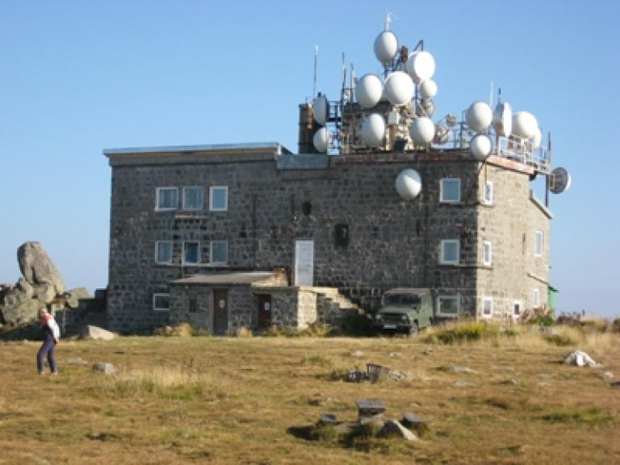
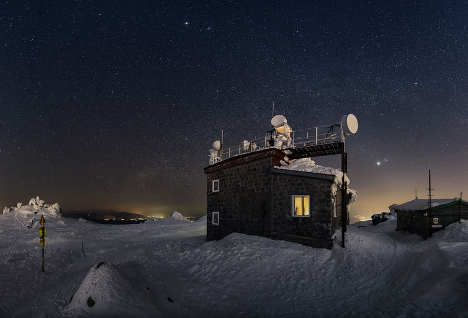

| Местоположение: На първенеца на Витоша – Черни връх (2290 м н.в.), 2284 м н.в., GPS: 42.563768 ºN 23.278032 ºЕ. Черни връх е обект от 100-те НТО и № 4 от 10-те п.п.
Описание: Сградата е без места за нощуване, туристическа столова, бюфет, външни санитарни възли. Заслонът е пункт от Е-4.
|
 |
|  | Изходни пунктове и съседни обекти: кв. Княжево (София) – 4.30 ч (през х. Кумата); м. Златните мостове – 2.30 ч; х. Кумата – 1.45 ч; х. Тинтява – 2.30ч; вр. Копитото – 4ч; кв. Драгалевци (София) – 3.30ч; м. Бай Кръстьо – 2.30 ч; кв. Симеоново (София) – 4 ч; х. Алеко – 1.30 ч; горна лифтова станция на лифт Романски – 0.30ч.
Стопанин: Български туристически съюз - София
За контакти: 0879119457.
|